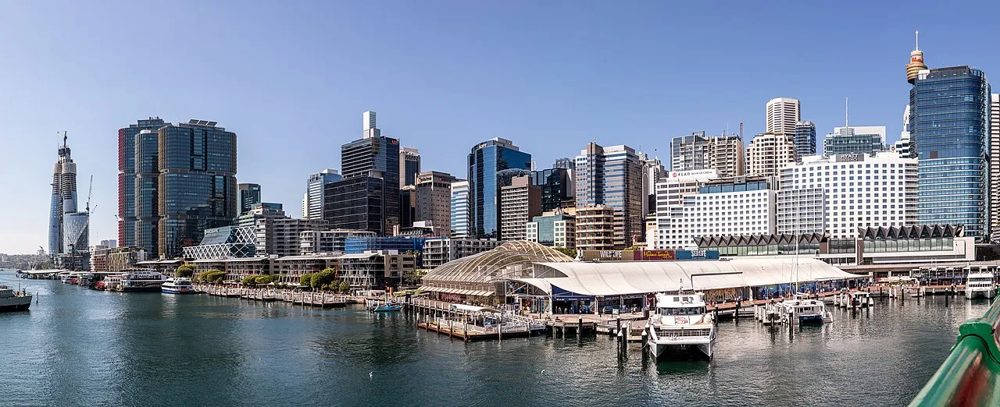
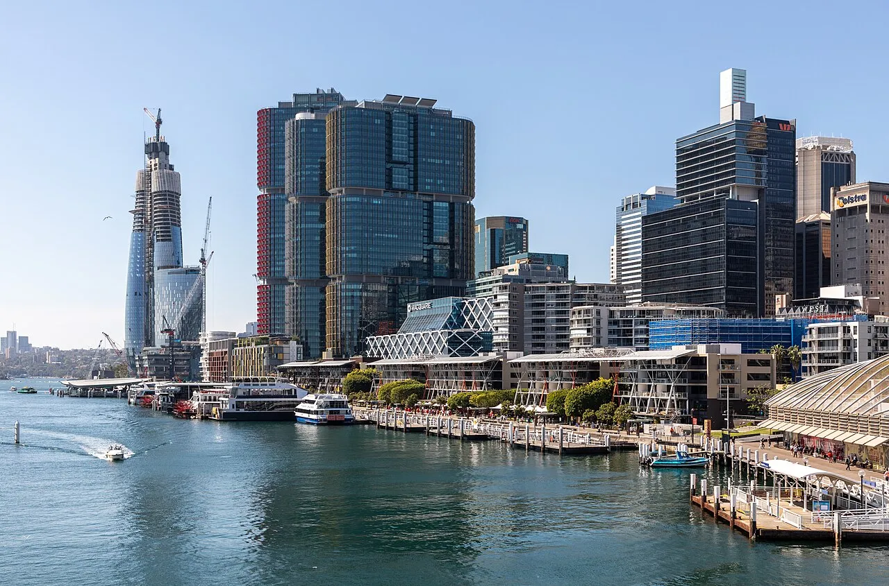
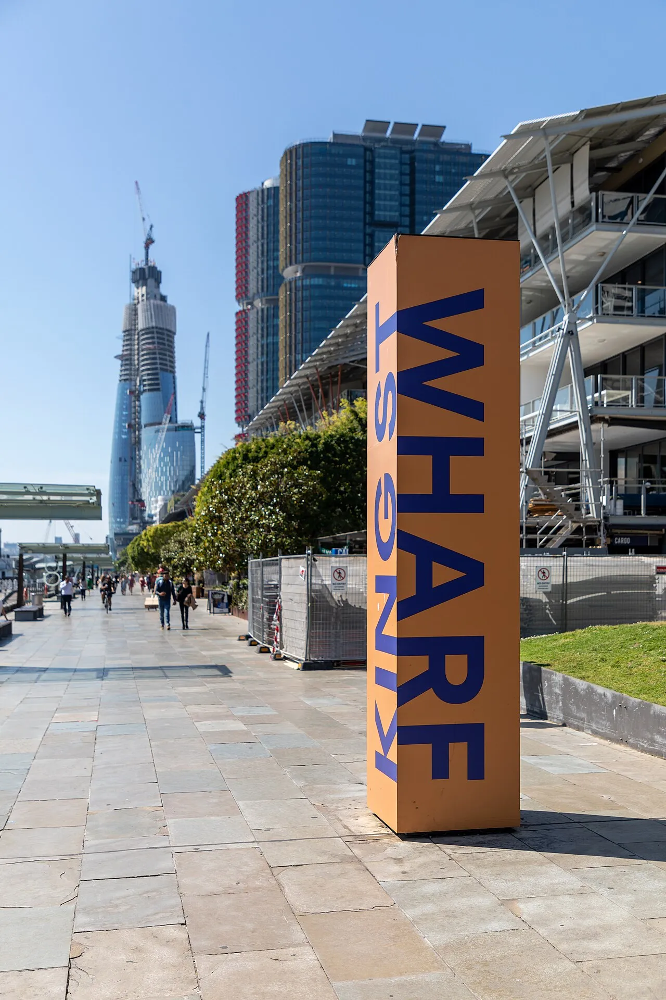
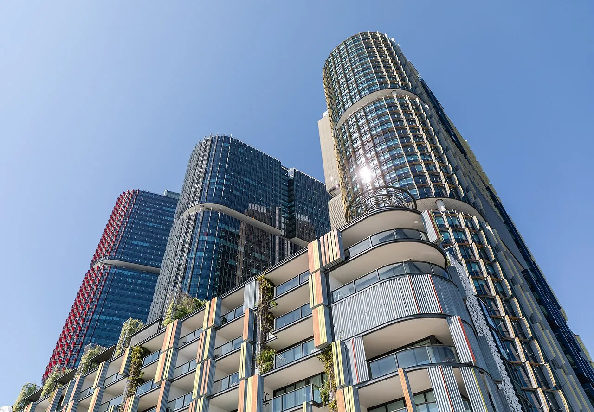

Last reviewed: February 2026
Weather & Best Time to Visit
My Harbour City That Feels Like Home
Quick Answer: Sydney is Australia's highest-rated port (4.9–5.0 stars) with the most spectacular harbour entrance on earth. The Circular Quay terminal is wheelchair accessible and offers step-free routes to the Opera House forecourt. You can book ahead for the Opera House guided tour ($43), the BridgeClimb ($174+), and the Manly Ferry ($10 return fare). Budget $50–$100 for a full day on your own, or $200+ if you add the BridgeClimb.
My Logbook: A Sydney Day
I stood on the bow deck at five-thirty in the morning, my hands gripping the cold metal railing, and watched Sydney materialize out of the pre-dawn darkness like a city being painted into existence. The air smelled of salt and eucalyptus — a scent I had not expected so close to a metropolis of five million people. Our ship glided past the dark headlands of North Head and South Head, and then the harbour opened before us in all its vastness, still and silver under a sky that was just beginning to blush pink along its eastern edge. I heard the low rumble of the engine change pitch as we slowed, and that was when I saw them together for the first time: the Harbour Bridge and the Opera House, side by side, impossibly close, looking exactly like every photograph I had ever seen and yet nothing like any photograph could capture.

We docked at the Overseas Passenger Terminal on Circular Quay West, and I stepped off into bright morning sunlight that felt warm on my face despite the early hour. The Harbour Bridge towered above me — locals call it "The Coathanger" — its grey steel arch enormous against the blue sky. I walked along the quay toward Bennelong Point, passing buskers setting up and ferry commuters clutching coffee cups, and within five minutes I was standing at the base of the Opera House. I touched one of the white ceramic tiles that cover those famous sails — cool and smooth under my fingertips — and looked up at the way the roof shells overlapped and interlocked, each one a different size, each one a feat of engineering that nearly broke the architect who designed them. Jorn Utzon won the 1957 competition against 233 entries from 30 countries, but the construction battles and cost overruns drove him from Australia before the building was finished. He never saw his masterpiece completed in person. Standing there, I felt the weight of that story — how something so beautiful could come from so much struggle.
My guided tour of the Opera House interior cost $43, and I would pay it twice over. Our guide showed us the Concert Hall with its soaring ceiling and the 10,000-pipe grand organ, and I listened as she explained how the acoustics were designed to make every seat feel close to the performers. The taste of the flat white I grabbed from the Opera Bar afterward — rich, smooth, perfectly bitter — became my official flavour of Sydney. I sat on the terrace with the harbour stretching out before me and watched ferries crisscross the water like slow green beetles, their wakes spreading in white V-shapes behind them. However, the real surprise was the Manly Ferry. For just $10 return fare, I had a thirty-minute harbour cruise that passed under the Bridge and alongside the Opera House, with views that rivalled any $200 dinner cruise. The wind off the harbour was cool and bracing, and I stood on the open deck at the stern and watched the city skyline shrink behind me, feeling the salt spray on my arms.

At Manly I walked the beach and tasted fish and chips from a paper bag — salty, hot, and crunchy — then caught the ferry back and headed for The Rocks, Sydney's oldest neighbourhood. The cobblestone lanes and sandstone buildings date back to the earliest days of the colony, and although the area has been thoroughly restored with cafes and galleries, I could still feel its rougher past in the narrow alleys and the convict-cut stone. I paused at the "Bara" sculpture depicting the ancient fish hooks that Eora women used from their nawi canoes, and it struck me that this harbour's human story stretches back thirty thousand years before any bridge or opera house.
The BridgeClimb tempted me despite its $174 price tag, but I chose to save my budget for the Bondi-to-Bronte coastal walk instead — a free, moderate walking trail that winds along sandstone cliffs above turquoise water. The views were staggering. Yet what I did not expect was how the walk would change my mood entirely. I had started the day as a tourist ticking off landmarks, but somewhere between Bondi and Bronte, with the sun on my shoulders and the crash of waves below, something shifted in me. I stopped photographing everything and just looked. The ocean stretched to the horizon, vast and indifferent and ancient, and I felt small in the best possible way.
The moment that stays with me: I was sitting on a bench at the Bronte lookout, watching a pair of surfers paddle out through the white water below, when I finally understood what Sydney had been quietly teaching me all day. I had come expecting postcard views and tourist checkpoints, but what the harbour gave me instead was something I had not known I needed — a quiet grace, a reminder that beauty is not something you capture with a camera but something you receive, like a gift you did not earn. My eyes welled with tears, not from sadness but from gratitude, and for the first time in a long while, I whispered a prayer of thanks for the simple privilege of being alive in a place this beautiful.Looking back, I realized that Sydney rewards those who slow down. I learned that the best moments were not the landmarks I had circled on my map, but the spaces between them — the ferry crossing, the coastal walk, the quiet bench at Bronte. The Opera House and the Bridge are worth every minute, but the lesson Sydney taught me was this: sometimes you travel across the world to see something famous, and what you find instead is yourself, standing still at last, grateful for the view.
The Cruise Port

Sydney operates two main cruise terminals. The Overseas Passenger Terminal (OPT) sits at Circular Quay West, directly between the Opera House and the Harbour Bridge — one of the most spectacular locations of any cruise terminal on earth. When your ship docks here, you step off the gangway and you are immediately in the heart of the city with both icons visible. The White Bay Cruise Terminal, roughly four kilometres west in the suburb of Rozelle, handles larger vessels that cannot fit under the Harbour Bridge. Free shuttle buses run regularly between White Bay and Circular Quay, and the ride takes about fifteen to twenty minutes depending on traffic. Both terminals offer accessible boarding ramps, and wheelchair users will find the Circular Quay precinct largely step-free with smooth pathways leading to the Opera House forecourt and ferry wharves. Currency is the Australian dollar, and prices in Sydney tend to run higher than many other cruise ports — budget accordingly.
Getting Around
Ovation and Quantum dock at Circular Quay (step off and you are at the Opera House) or White Bay (15-minute shuttle or ferry). Everything in the central harbour area is walkable or a quick ferry ride away.
Sydney's public transport network is excellent and well-suited to cruise visitors. The Opal card (available from convenience stores and ferry terminals for a few dollars) works across all buses, trains, ferries, and light rail. A single ferry trip costs around $6–$8 with the Opal card, and buses to Bondi Beach run roughly every ten minutes from Circular Quay for about $5 each way. Taxis and rideshare services like Uber are plentiful and reasonably priced — expect to pay $30–$40 from Circular Quay to Bondi Beach by car. For those with mobility concerns, the train stations at Circular Quay and Town Hall have elevator access, and most Sydney ferries have level boarding that accommodates wheelchairs and mobility scooters. The key to getting around Sydney efficiently is to use the ferries whenever possible — they are fast, affordable, scenic, and connect Circular Quay to Manly, Taronga Zoo, Darling Harbour, and Watson's Bay. Walking is the best option for the harbour precinct itself, with flat, accessible paths connecting the Opera House, Royal Botanic Gardens, and The Rocks in a pleasant thirty-minute loop.
Real Talk: Circular Quay terminal is the dream scenario — step off and the Opera House is literally in front of you. White Bay terminal is the reality for larger ships, and although free shuttles run to Circular Quay, the 15–20 minute ride adds up over the day. Plan accordingly and consider the ferry from White Bay as an alternative route with better views.
Port Map
Explore Sydney's cruise terminals, beaches, landmarks, and neighbourhoods. Click markers for details and directions.
Top Excursions & Attractions

Sydney offers an exceptional range of excursions, and whether you choose a ship excursion or go independent, there is something for every energy level and budget. The ship excursion options typically include a city highlights tour ($100–$150), a combined Opera House and harbour cruise package ($120–$180), and a Blue Mountains day trip ($150–$200). The advantage of a ship excursion is the guaranteed return to the vessel — peace of mind that matters if this is a transit port rather than your embarkation city. However, Sydney is one of the easiest ports in the world to explore independently, and the savings can be substantial.
Sydney Opera House Guided Tour ($43): Book ahead, as tours fill quickly on cruise ship days. The one-hour walking tour takes you inside the Concert Hall, the Joan Sutherland Theatre, and backstage areas. This is a low-walking, moderate activity excursion — accessible for most mobility levels with elevator access available. I consider this essential for any first-time visitor.
BridgeClimb Sydney ($174–$388): The signature climb takes you to the summit of the Harbour Bridge arch, 134 metres above the harbour. Choose from the original climb (3.5 hours), the express climb (2.5 hours), or the twilight/night options. This is a high-energy, strenuous activity and is not suitable for passengers with significant mobility limitations. The views are extraordinary, but the cost is real — weigh it against your overall port day budget.
Bondi to Bronte Coastal Walk (free): This two-kilometre cliffside path is moderate walking with some stairs and uneven surfaces. Take bus 333 from Circular Quay ($5 fare) to Bondi, walk the coast to Bronte, and catch a bus back. Allow two to three hours for a relaxed pace with photo stops. The sandstone cliffs and turquoise coves are genuinely breathtaking.
Manly Ferry and Beach ($10 return): The thirty-minute ferry crossing from Circular Quay is an attraction in itself, passing under the Bridge and alongside the Opera House. At Manly, the beach, the Corso promenade, and the coastal walk to Shelly Beach are all free. This is my top recommendation for visitors wanting a beach day on a budget.
Taronga Zoo ($52 adult entry): A twelve-minute ferry ride from Circular Quay lands you at the zoo wharf, where a cable car carries you to the top entrance. The zoo sits on a hillside with harbour views from every enclosure. Wheelchair accessible paths are available throughout, though some areas involve steep gradients. Allow three to four hours for a thorough visit.
Royal Botanic Gardens (free): Adjacent to the Opera House, these gardens offer flat, accessible paths through thirty hectares of landscaped grounds with harbour views. A perfect low-walking option for passengers who prefer a gentle pace. The Mrs Macquarie's Chair lookout provides one of Sydney's finest vantage points.
For independent excursions, I recommend budgeting $50–$100 per person for transport and one or two paid attractions, with the Manly Ferry and coastal walk as the best value combination in the city. If you book ahead for the Opera House tour and plan your ferry connections, you can see an enormous amount of Sydney in a single port day without spending beyond your means.
Depth Soundings Ashore

The honest story of Sydney is that it delivers on its promise — and that is rare among famous cities. The Opera House really is as striking as the photographs suggest, the harbour really is that blue, and the laid-back atmosphere really does feel genuine rather than performed for tourists. However, Sydney is expensive. A simple lunch in the harbour area runs $20–$30, a coffee costs $5–$6, and premium attractions like the BridgeClimb can consume your entire port day budget in a single booking. The good news is that the best things in Sydney — the coastal walks, the ferry views, the Botanic Gardens, the harbourside paths — are completely free. Plan your spending carefully and you will find that Sydney rewards the budget-conscious visitor just as richly as the big spender. The weather can also turn quickly; I have seen sunny mornings become grey, blustery afternoons within an hour. Carry a light jacket even if the forecast looks clear. Despite these caveats, Sydney consistently earns its reputation as one of the finest cruise ports on the planet, and I have never met a traveller who regretted a day spent here.
Frequently Asked Questions
Should I book the Opera House tour in advance?
Yes, definitely book ahead — tours fill up quickly on cruise ship days. The guided tour costs $43 per adult and is worth it to see backstage areas and learn the incredible construction story. You can book directly on the Opera House website.
Is the Harbour Bridge climb worth the cost?
If you are not afraid of heights and have the budget ($174–$388 depending on the climb type), it is unforgettable. The views are spectacular and you get a professional photo at the summit. However, if the price feels steep, the Pylon Lookout ($19) offers excellent bridge-level views for a fraction of the cost.
How do I get to Bondi Beach from the cruise terminal?
From Circular Quay, take bus 333 (30–40 minutes, about $5 fare with an Opal card) or a taxi/Uber ($30–$40). The Bondi to Bronte coastal walk is free and absolutely stunning. Go early to avoid the afternoon crowds on the return bus.
What is the best way to see Sydney Harbour?
The Manly Ferry from Circular Quay offers stunning harbour views and is an experience in itself. The 30-minute crossing passes under the Bridge and by the Opera House for just $10 return with an Opal card — far better value than most harbour dinner cruises.
Is Sydney accessible for passengers with mobility challenges?
The Circular Quay terminal is wheelchair accessible with ramps and elevators. Most ferries have accessible boarding, and the Opera House forecourt is flat and navigable. The Bondi to Bronte walk, however, has stairs and uneven surfaces that present a walking difficulty for some visitors. The Royal Botanic Gardens offer a flat, accessible alternative for those who need it.
What should I budget for a day in Sydney?
A budget-conscious day using public transport, free attractions, and a casual lunch can be done for $50–$80 per person. Adding the Opera House tour brings it to $90–$120. The BridgeClimb pushes a full day to $250+ per person. Sydney is not cheap, but the free harbour walks and ferry views are among the best experiences in the city.
Photo Gallery





Image Credits
- sydney-hero.webp: WikiMedia Commons (CC BY-SA)
- sydney-opera-house.webp: WikiMedia Commons (CC BY-SA)
- sydney-harbour-bridge.webp: WikiMedia Commons (CC BY-SA)
- sydney-1.webp: WikiMedia Commons (CC BY-SA)
- sydney-bondi.webp: WikiMedia Commons (CC BY-SA)
- sydney-rocks.webp: WikiMedia Commons (CC BY-SA)
- sydney-2.webp: WikiMedia Commons (CC BY-SA)
- sydney-3.webp: WikiMedia Commons (CC BY-SA)
- sydney-4.webp: WikiMedia Commons (CC BY-SA)
- sydney-ferry.webp: WikiMedia Commons (CC BY-SA)
- sydney-skyline.webp: WikiMedia Commons (CC BY-SA)
- sydney-botanical.webp: WikiMedia Commons (CC BY-SA)
Images sourced from WikiMedia Commons under Creative Commons licenses.